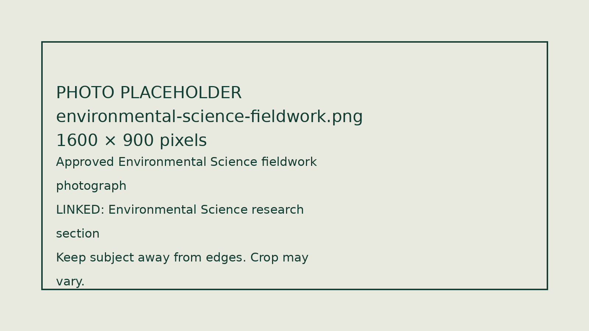
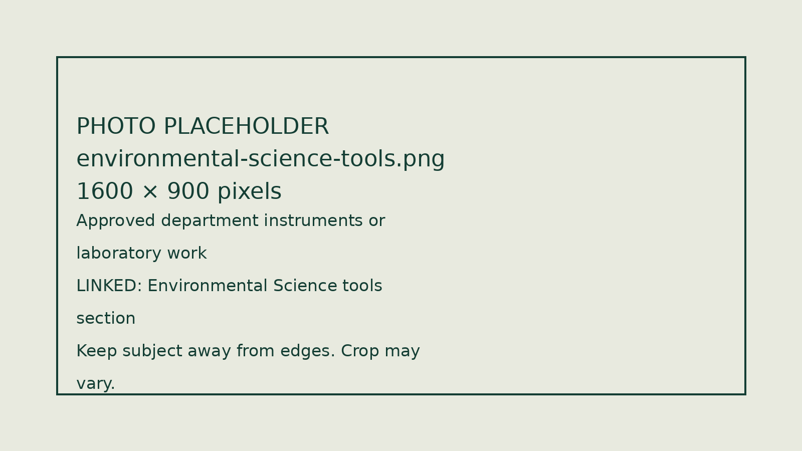

Research
Build a foundation for higher education and scientific research.
Department of P.G. Studies and Research
M.Sc. Environmental Science · Shivamogga
Department content supplied for this design concept. Programme details, facilities and service links require university approval before official publication.
Learn environmental science through field research, real data and modern tools—and build skills for a changing world.
Climate, water, biodiversity, pollution and carbon need environmental scientists who can observe, measure, analyse and act.
The M.Sc. Environmental Science content presented here brings together field research, environmental measurements and data skills. Current eligibility, curriculum, fees and application dates will be added from approved university information.
Build a foundation for higher education and scientific research.
Develop practical confidence with measurements, data and environmental tools.
Connect environmental knowledge with the needs of communities, organisations and landscapes.
Located in the Western Ghats region, Kuvempu University offers a setting for exploring forest ecosystems and the Bhadra landscape. Study forests, biodiversity, soils, water, climate, vegetation and ecosystem processes where they occur.

Labelled placeholder — replace with an approved department photograph.
Develop research confidence through observation, field evidence, analysis and scientific communication. Specific projects and student research opportunities will be listed after departmental review.
Explore contemporary environmental research methods, from photosynthesis analysers and fluorometers to climate sensors, forest measurements and environmental monitoring. Equipment access and teaching arrangements will be confirmed by the department.

Labelled placeholder — replace with an approved department photograph.
Video supplied for this prototype. Playback uses a third-party service.
Verified faculty profiles, photographs, research interests, Google Scholar, VIDWAN and ORCID links will appear here. No staff records have been invented.
Research student profiles will be added here.
Recent publication records from available faculty Google Scholar profiles, shown newest first. These are works by listed faculty, not necessarily research conducted at Kuvempu University.
Partial initial import: two 2025 publications retrieved from Rakesh Tiwari’s Google Scholar profile. Other faculty records are pending. This is not a complete departmental bibliography or a faculty-selected ranking. Last reviewed: 2026-10-21. Citation counts and automatic refresh are not active.
Loading initial publication records…
This is the university-wide calendar, not an Environmental Science-only feed. A department-filtered calendar can replace it when its public link is supplied.
Public events calendar powered by Teamup. If the calendar does not appear, open it in a new tab ↗. Dates and times follow the calendar’s configured timezone.
No verified department announcements have been supplied for this release. Public notices will be classified for students, staff or everyone, with dates and issuing offices.
Content adapted from the department copy supplied for this project. This page is a design concept, not an admissions notification.